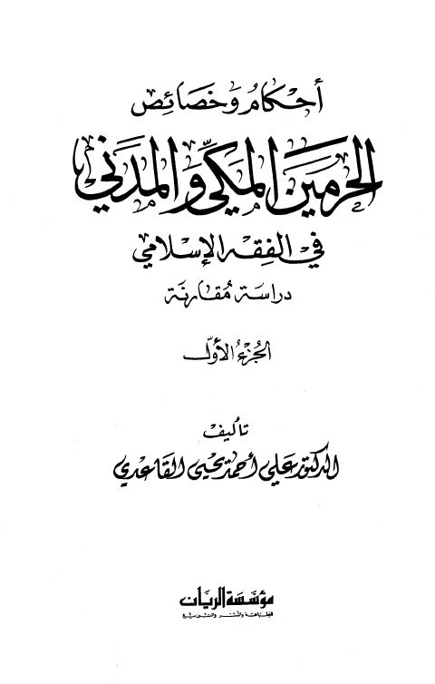

Downloads need an internet connection.
أحكام الحرمين المكي والمدني في الفقه الإسلامي دراسة مقارنة- القاعدي
Authors: علي أحمد يحيى القاعدي
Publishers: مؤسسة الريان
**▫️ العنوان: أحكام الحرمين المكي والمدني في الفقه الإسلامي دراسة مقارنة- القاعدي** ▪️ المؤلف: #علي_أحمد_يحيى_القاعدي ▫️ الناشر: #مؤسسة_الريان ▪️ تاريخ النشر: 1429هـ 2008 م ▫️ بلد النشر: بيروت، #لبنان ▪️ الطبعة: 1 ▫️ عدد الأجزاء: 2 ▪️ الصفحات: 980 ▫️ نوع الوعاء: #كتاب ▪️ التصنيف الرئيسي: #الفقه_وأصوله ▫️ التصنيف الفرعي: #الوقف ۪